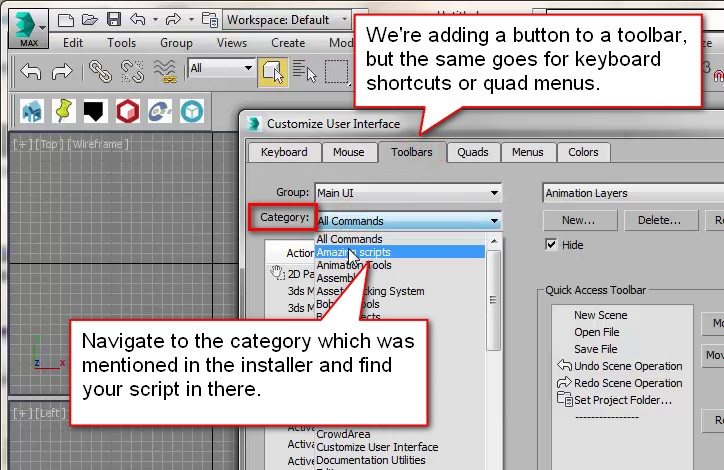
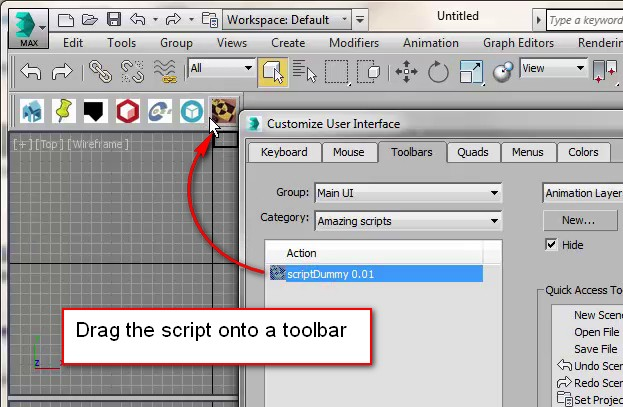

Installation¶
Installing takes just a few steps
Drag the mzp-file onto a viewport
An installer dialog pops up. Take note of the category the script is in. It’s “Klaas Tools” in this case
Press “Install” in the installer dialog which pops up
The script is installed. Once done, a popup tells you how to access the script from a toolbar
To add the script to a toolbar, go to the Menu > Customize > Customize user interface…
Go to the “Toolbars” tab and pick the category the script is in
Drag the script onto a toolbar and you’re done!
Going over the entire installation procedure
Add a button on a toolbar¶
To add the script to a toolbar, use the menu: Customize > Customize User Interface… Go to the “Toolbar” tab and in the “Category” list pick the “Klaas tools” item. A list of scripts in that category appears. Pick the Maproom [version number]” item and drag that to an existing toolbar or make a new toolbar for it. Save the ui layout if you want to keep it. You can also put the script in a menu, quad, under a keyboard shortcut or a combination of these.
The customize user interface dialog
Add the script to a toolbar